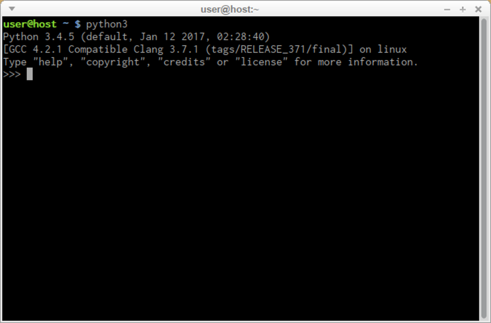

En Linux es bastante habitual que Python ya venga instalado por defecto porque el sistema operativo depende de él para muchas tareas internas. Muchas distribuciones (como Ubuntu, Debian, Fedora o Arch) incluyen Python preinstalado porque:
python3 ya funciona directamente en la terminal.
Revisa los apuntes de terminales para aprender a moverte en Linux y dominar los comandos básicos.
Ir a apuntes de terminalesAbriremos nuestra terminal de linux o desde el menu de aplicaciones buscando terminal o mediante el atajo: Ctrl + Alt + T Introduciremos lo siguiente y pulsaremos enter:
python3
Si aparece algo como esto ya esta instalado no tienes que hacer nada más:

En caso de que no este instalado procederemos a instalarlo desde la misma terminal. Introduciremos lo siguiente y pulsaremos enter, asi comenzara la instalación:
sudo apt update
sudo apt install python3
A continuación cuando finalice el proceso pasaremos a comprar que se ha instalado de forma correcta mediante la siguiente orden:
python3 --version
El gestor de paquetes de Python (pip) sirve para instalar y administrar librerías externas que no vienen incluidas en Python por defecto. Introduciremos lo siguiente en la terminal:
sudo apt install python3-pip
Comprobaremos que la instalación es correcta:
pip3 --version